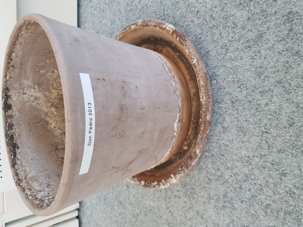
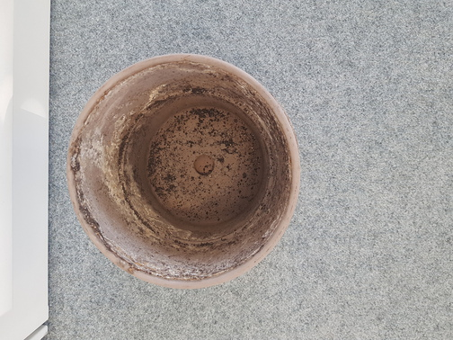

Adopted in 2013 at the EPFL library following a librarian Pedro-to-librarian Marjorie
donation, Gundula passed away in June 2020 at the Rolex Learning Center.
The office shutdown combined with the heatwave got the better of you. Life is hard for a papyrus if it does not have water. The windows of the building are dangerous. Gundula resisted well, but without her librarian to water her, she withered and then dried up.
When she died, her librarian in charge wanted her to be buried in front of the library staff entrance so that she could rest where she lived for 7 years.
Farewell Gundula, your long green stems and your parasol leaves will be missed.
Marjorie Platon: Information specialist at the EPFL Library for the past 10 years, Marjorie works for the “service au public”. She manages the schedules of the counter staff. She is also in charge of the Student Assistants. Her professional hobbies are standards and copyright. To keep pace, she likes to taste the typical dishes brought by her colleagues.